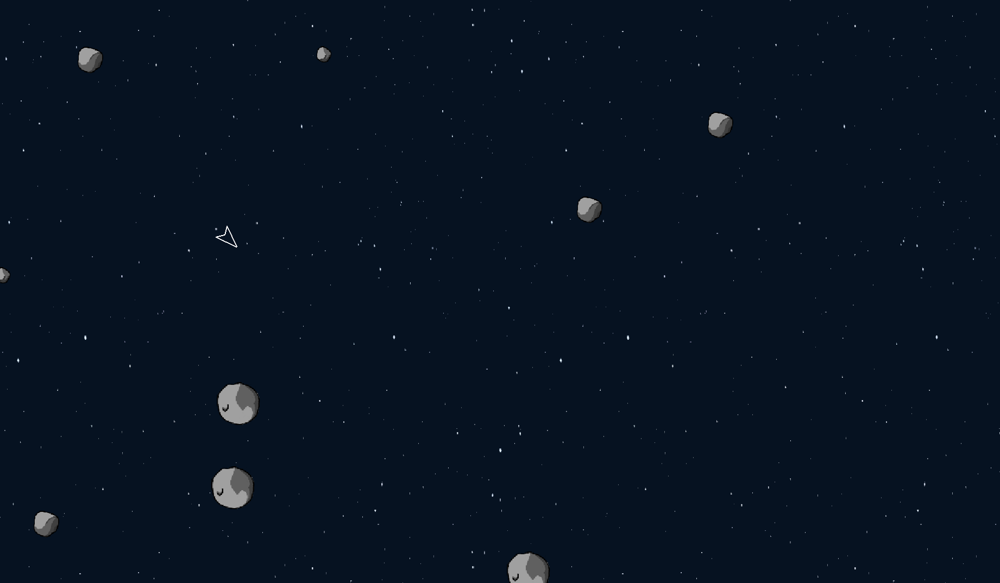

Asteroid
My first coding project: a copy of the Asteroids arcade game, and a neural network written from scratch that is meant to learn to play it.
Mon premier projet de code : une copie du jeu d’arcade Asteroids, et un réseau de neurones écrit de zéro censé apprendre à y jouer.
- ContextContexte
- Personal projectProjet personnel
- PeriodPériode
- June to August 2024Juin à août 2024
- TeamÉquipe
- Solo
- Stack
- Python, PyGame
- ResultRésultat
- The game is complete. The AI doesn’t converge yet; its best score is about 300.Le jeu est complet. L’IA ne converge pas encore ; son meilleur score est d’environ 300.
- CodeCode
- github.com/Materwan/asteroid

Where it standsOù j’en suis
The game itself works. The AI is not developed enough to converge yet, and I plan to resume the project. I chose Python because it was the first language I learned.
Le jeu fonctionne. L’IA n’est pas encore assez développée pour converger, et je compte reprendre le projet. J’ai choisi Python car c’est le premier langage que j’ai appris.
In the middle of the project I paused for a month, then restarted almost from scratch: the structure no longer matched what I had learned since.
En cours de route, j’ai fait un mois de pause puis repris presque de zéro : la structure ne correspondait plus à ce que j’avais appris entre-temps.
ChallengesDifficultés
- Training was slow, so I sped the game up.L’entraînement était lent, j’ai donc accéléré le jeu.
- At higher speed the movements became jerky, so I interpolated them.À vitesse élevée, les mouvements devenaient saccadés, j’ai donc interpolé les déplacements.
What I would do differentlyCe que je ferais autrement
- Write the neural network with numpy.Écrire le réseau de neurones avec numpy.
- Turn off the display during training.Désactiver l’affichage pendant l’entraînement.
Skills usedCompétences mobilisées
Python, PyGame, vectors, interpolation, machine learningvecteurs, interpolation, machine learning.